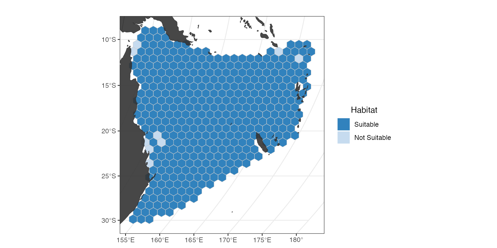
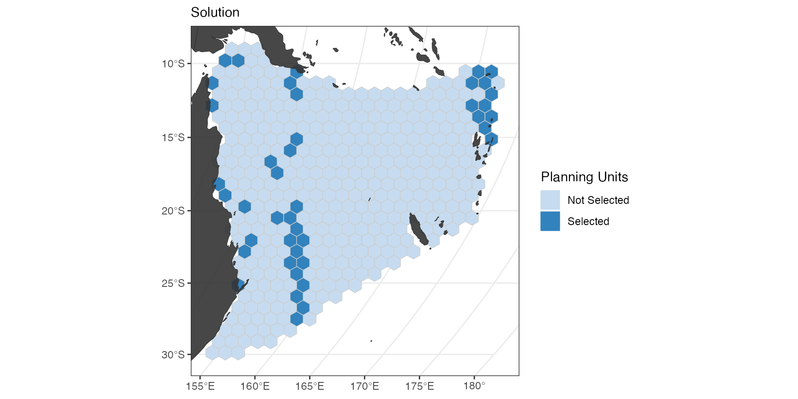
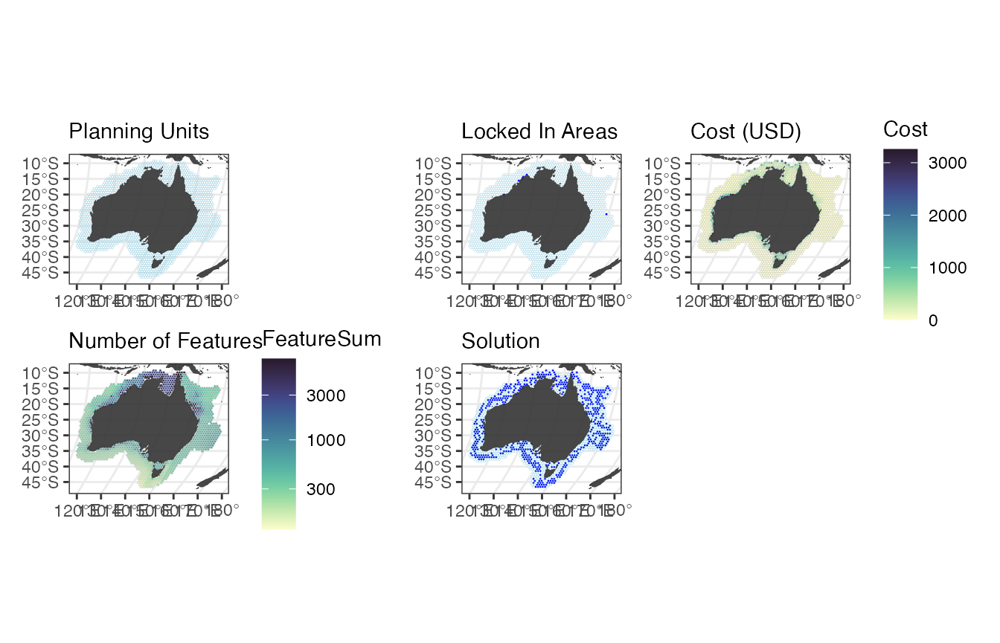

A Basic Spatial Planning Workflow
spatialplanr.Rmd
library(spatialplanr)Overview
This repository is specific to the work of the https://mathmarecol.github.io at the University of Queensland. It is not intended to be used by anyone outside the MME Lab without the permission of Professor Anthony Richardson.
This code has been written to simplify the process for running a prioritizr analysis on a given region. It is still a work in progress so feel free to submit pull requests with new features and code improvements.
The code depends on sf, terra, tidyverse, rnaturalearth, prioritizr, stars, patchwork.
To use this code, you will need to download and expand MME1DATA-Q1215/SpatialPlanning/Data.zip to the directory GitHub/SpatialPlanning/Data/. Note that the download is only 2GB, but the expanded data is 35 GB in size. If you need help subsetting the data to your region due to memory or HD space constraints, contact Jason.
If you run into memory problems, you can try increasing the amount of the HD space gdal is allowed to use. Sys.setenv(GDAL_MAX_BAND_COUNT = 120000)
Preliminaries
source(“SpatPlan_Process_AquaMaps.R”) # This script reprocesses AquaMaps. WARNING: Lots of time (10s hrs) and memory (10s GB) source(“SpatPlan_Process_MPAs.R”) # Only run if you need to reprocess the MPA data. You will need the WDPA files
Set user parameters
You can set a region if it is defined in SpatPlan_Get_PlanningUnits. THe currently defined regions are: Global, Australia, WestPacific. If you need a new region, please submit a PR so others can benefit.
Region <- "Australia"You can also define a region with square boundaries, which we will do here.
Region <- c(xmin = 150, xmax = 160, ymin = -40, ymax = -30)
save_name <- "SEAustralia" # Name used in the savingSet the shape and area of the planning unit in square kilometres.
Shape <- "Hexagon" # "Shape of PUs
PU_size <- 5240 # km2 (~1 deg at equator)
# PU_size <- 2620 # km2 (0.5 deg at equator)
# PU_size = 669.9 # km2 (0.25 deg at equator)
# PU_size <- 1000 # km2Set the depth range and probability cutoff (CO) for extracting AquaMaps data.
MinDepth <- 0
MaxDepth <- 200
CO <- 0.5 #Cutoff level for AquaMapsSet minimum and maximum limits for inverse area targets
minTarget = 0.2
maxTarget = 0.5Choose CRS for analysis
cCRS <- "+proj=robin +lon_0=0 +x_0=0 +y_0=0 +datum=WGS84 +units=m +no_defs" # Robinson
# cCRS <- "+proj=robin +lon_0=180 +x_0=0 +y_0=0 +ellps=WGS84 +datum=WGS84 +units=m +no_defs" # Robinson: Pacific-centredAnalysis Region
Start your analysis by defining your region and setting up the planning units.
Get the boundary for your chosen region.
Bndry <- SpatPlan_Get_Boundary(Region, cCRS)Get the land boundaries to remove overlap. The object “world” represents the land mass that should be removed (inverse = FALSE)
world <- rnaturalearth::ne_countries(scale = "medium", returnclass = "sf") %>%
sf::st_transform(cCRS)If Region = WestPacific, demarcating boundary and removing land areas would be different The object “world” here represents the planning region (inverse = TRUE)
Create Planning Units
PUs <- SpatPlan_Get_PlanningUnits(Bndry, world, PU_size, Shape)
#> [1] "Range of cellsize are 5240 km2 to 5240 km2"We can check what the PUs look like
(ggPU <- SpatPlan_Plot_PUs(PUs, world)) # Plot Planning Units
Get the features
Aquamaps
Get aquamaps data for our species and region TODO Check the overlay of raw v processed species distribution If using Pacific-centered projection, define western and eastern limits west_limit = -120 # use negative numbers for western limit east_limit = 130 # use positive numbers for eastern limit
aqua_sf <- SpatPlan_Get_AquaMaps(PUs, cCRS, MinDepth, MaxDepth, CutOff = CO)
#> xmin ymin xmax ymax
#> 107.932448 -47.978833 164.404230 -7.866356Longhurst Provinces
You can also assign a Longhurst Province to each PU and set targets individually by province.Here we simply demonstrate this, but do not implement it into a spatial plan.
Longhurst <- SpatPlan_Match_Longhurst(PUs, cCRS)
#> Reading layer `Longhurst_world_v4_2010' from data source
#> `/Users/jason/SpatPlan_Data/LonghurstProvinces/Longhurst_world_v4_2010.shp'
#> using driver `ESRI Shapefile'
#> Simple feature collection with 54 features and 2 fields
#> Geometry type: MULTIPOLYGON
#> Dimension: XY
#> Bounding box: xmin: -180 ymin: -78.50016 xmax: 180 ymax: 90
#> Geodetic CRS: WGS 84
(ggLong <- SpatPlan_Plot_Longhurst(Longhurst, world))
Get locked in areas
LockedIn <- SpatPlan_Get_MPAs(PUs, cCRS)
(ggMPA <- SpatPlan_Plot_MPAs(LockedIn, world)) # Plot Locked in areas
Get Fisheries cost
Cost <- SpatPlan_Get_FishCost(PUs, cCRS)
(ggCost <- SpatPlan_Plot_Cost(Cost, world)) # Plot cost
Set up targets
Inverse area targets
Targets <- SpatPlan_Get_TargetsIA(aqua_sf, minTarget, maxTarget)Set up the planning problem
Get the list of features
features <- aqua_sf %>%
dplyr::as_tibble() %>%
dplyr::select(-geometry) %>%
names()
out_sf <- cbind(Cost, LockedIn, aqua_sf)
p1 <- prioritizr::problem(out_sf, features, "Cost") %>%
prioritizr::add_min_set_objective() %>%
prioritizr::add_relative_targets(Targets$Target) %>%
prioritizr::add_locked_in_constraints("locked_in") %>%
prioritizr::add_binary_decisions() %>%
prioritizr::add_default_solver(verbose = FALSE)Solve the planning problem
s1 <- prioritizr::solve(p1) %>%
dplyr::mutate(solution_1 = as.logical(solution_1)) # Making it logical helps with the plotting #TODO move this to the plotting section?Plotting
(ggSol <- SpatPlan_Plot_Solution(s1, PUs, world)) # Plot Solution
ggFeatureNo <- SpatPlan_Plot_FeatureNo(aqua_sf, world) # Plot Number of features
#+ echo=FALSE, fig.width=12
(gg <- patchwork::wrap_plots(list(ggPU, ggMPA, ggCost, ggFeatureNo, ggSol), ncol = 3))
# ggsave(file.path("Figures", "Final_Solution.pdf"), plot = gg, height = 20, width = 40, units = "cm")Compare 2 solutions
Here we run another problem/solution combo and compare the output with our original one. With a much lower target (30%), we expect less area set aside.
Create the second planning problem
p2 <- prioritizr::problem(out_sf, features, "Cost") %>%
prioritizr::add_min_set_objective() %>%
prioritizr::add_relative_targets(0.3) %>%
prioritizr::add_locked_in_constraints("locked_in") %>%
prioritizr::add_binary_decisions() %>%
prioritizr::add_default_solver(verbose = FALSE)Solve the planning problem
s2 <- prioritizr::solve(p2) %>%
dplyr::mutate(solution_1 = as.logical(solution_1))